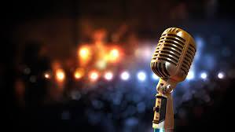
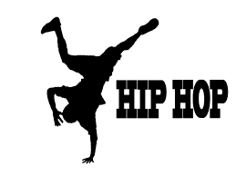
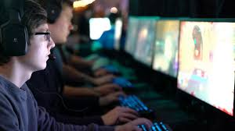

These are my three main hobbies when I feel bored at home doing nothing which is singing,dancing, and playing.Singing is one of my favorite
I do eveytime and anywhere ,I have alot of favorite singers in hollywood and even here in the Philippines , the music that I love are most likely RnB with multimeter melodies
one of my favorite music is "At My Weakest" by James Arthur and "Jealous" by Labrinth at the moment because the music really have great message to the listeners, music
gives me happiness and one of the reason that makes me alive.Dancing, there are alot genres that I love in dancing one are the street dance and hip hop
because it is good in the eyes or very entertaining in the eyes especially when the choreography is really good ,dancing is a part of my daily routine without it I'm not able to
be good at it, my favorite at the dance group is "The Poreotics" their choreography's are really epic, everytime they dance they always inspire the people who watch them to
dance and make a better life.Playing this is very essential to my life without it I will not able to learn alot, because of playing and paying attention and focus
I've learned, Dota is my number one doings when I feel bored.These hobbies helps me improve and enhance my skills and talent , with these hobbies I can be able to join in events
and give me the oppurtunity to experience the world of entertainment ,these hobbies is also my exercise especially dancing.